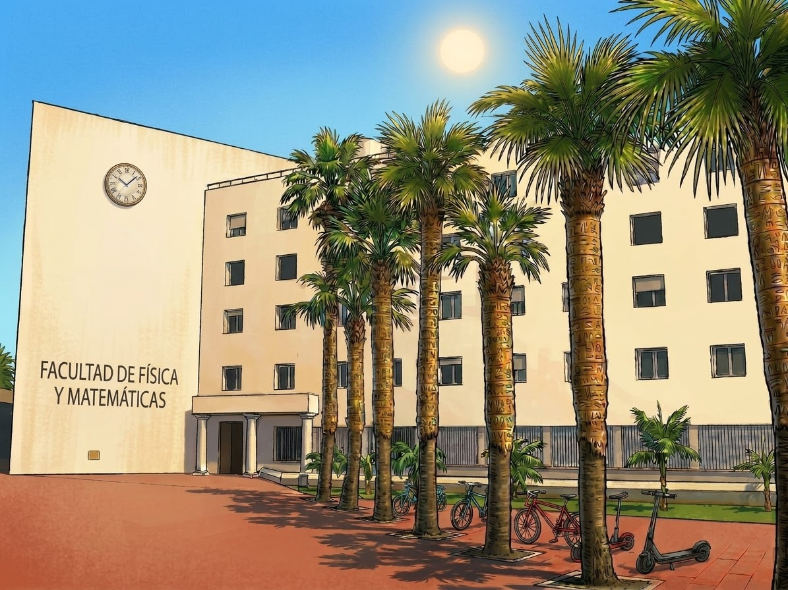

1st CANARiAS
Algebra Fest
Where Algebra Meets Geometry, Codes, and Combinatorics
- Dates
- 12–16 July 2027
- Venue
- Universidad de La Laguna, Tenerife, Canary Islands, Spain
This website is under construction. The program, speakers and registration details will be posted here soon.

Overview
The 1st CANARiAS Algebra Fest is a meeting devoted to algebra and its interactions with geometry, coding theory and combinatorics.
Many of the most active questions in these areas sit where they meet. Algebraic methods are used to construct and analyze error-correcting codes, to study graphs, hypergraphs and other combinatorial structures, and to understand geometric objects. In turn, these problems keep giving rise to new questions in algebra.
The Fest aims to bring together researchers working across these interactions, from PhD students and postdocs to senior researchers, to share recent results, exchange ideas and start new collaborations in a relaxed setting in the Canary Islands.
Topics include, among others:
- Commutative algebra and combinatorial commutative algebra
- Algebraic and toric geometry
- Algebraic coding theory: evaluation codes, Reed–Muller and algebraic geometry codes, generalized Hamming weights
- Graphs, hypergraphs, matroids and designs
- Finite fields and finite geometries
- Computational algebra and Gröbner bases
Program
Schedule
TBA
Abstracts
TBA
Participants
- SARA ASENSIO FERRERO
- William Hernández
- Patrick Popescu-Pampu
Organizers
Organizing committee
Universidad de La Laguna, Spain
Scientific committee
Registration
TBA
Venue and local info
Venue
The 1st CANARiAS Algebra Fest will be held at the University of La Laguna (ULL) in San Cristóbal de La Laguna, Tenerife. Today ULL is a public research university and the oldest university in the archipelago. Its main campuses are in La Laguna, a city declared a UNESCO World Heritage Site in 1999.
Building and room to be announced.
Tenerife in July is a great reason to come on its own. La Laguna sits about 550 m above sea level, so summer days are warm but rarely hot, and evenings can be cool, so bring a light jacket. The Teide National Park, with Spain's highest peak, is about an hour's drive away. The laurel forests and hiking trails of the Anaga mountains begin right at the edge of town, and beaches and natural sea pools are a short drive or bus ride away. The historic center of La Laguna, with its colonial streets, cafés and restaurants, is right next to the university.
Getting here
Tenerife has two international airports.
Tenerife North–Ciudad de La Laguna (TFN) is right next to the city, only about 3 km from La Laguna. It is the island's main hub for flights to the other Canary Islands and mainland Spain, and its busiest routes are to Madrid, Barcelona and Gran Canaria. It is the most convenient option if you connect through a Spanish hub. A taxi to the center takes about 10 minutes, and TITSA buses run from the airport to the La Laguna bus station.
Tenerife South (TFS) is the island's main international airport. It has direct flights to more than 100 destinations, most of them international, including many European cities such as London, Manchester, Dublin, Paris, Brussels, Milan, Amsterdam, Geneva, Lisbon, Prague and Helsinki. The airport is on the other side of the island, about an hour's drive from La Laguna, and a taxi costs roughly €80–110. By public transport, take an express bus to Santa Cruz and then the tram to La Laguna. There is also a direct bus between the two airports, though it runs less often.
Travelers from outside Europe usually connect through Madrid, Barcelona or another major European hub. Bus and tram timetables are available at titsa.com and metrotenerife.com.
Where to stay
July is high season in Tenerife, so we recommend booking early. All of these hotels are in or near the historic center of La Laguna:
- Hotel Laguna Nivaria ★★★★, Plaza del Adelantado 11. A fully renovated 16th-century mansion in the old town.
- La Laguna Gran Hotel ★★★★, Calle Nava y Grimón 18. Centrally located, with a seasonal pool, underground parking and a generous breakfast.
- Nava Suites ★★★★, Calle Nava y Grimón 3. A boutique hotel in a restored historic mansion, with ten individually decorated suites.
- Hotel Aguere, Calle Obispo Rey Redondo 55. A classic hotel facing the Teatro Leal, operating since 1885, with 22 rooms in a historic building. A charming, good-value option.
Santa Cruz de Tenerife, the island's capital, is another option. It is 30–40 minutes from La Laguna by tram.